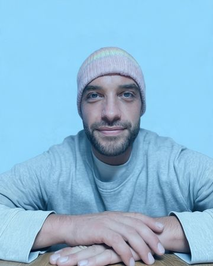

Per Sprache erledigen
Rapporte, Notizen, Offerten und Antworten an Kunden einfach ins Handy sprechen, auch unterwegs. Daraus entstehen fertige Entwürfe.
Weniger Zeit im Büro, mehr Zeit für Ihre eigentliche Arbeit. Ich zeige kleinen Betrieben, wie KI den Papierkram vereinfacht. Vieles erledigen Sie künftig einfach per Sprache vom Handy aus, Rechnungen und Belege werden automatisch vorbereitet.
Erstgespräch 30 Minuten, kostenlos. Ich sage Ihnen ehrlich, ob sich KI für Sie lohnt.

Ein Malerbetrieb nach der Baustelle. Das Prinzip funktioniert genauso für Offerten, Rapporte, Belege oder Kundenanfragen.
Beispiel zur Veranschaulichung. Wie viel Zeit Sie sparen, klären wir in der Analyse anhand Ihrer echten Abläufe.
Nach einem langen Tag auf der Baustelle sitze ich noch im Büro.
Was Sie unterwegs ins Handy sprechen, wird zu Rapport und Rechnung.
Die Belege stapeln sich, bis die Buchhaltung fragt.
Belege werden sauber gespeichert und sortiert. Die Buchhaltung ist vorbereitet.
Für Werbung und Social Media fehlt mir die Zeit.
KI hilft Ihnen, in wenigen Minuten gute Texte und Beiträge aus Ihren Baustellenfotos zu machen.
ChatGPT habe ich mal ausprobiert, aber es bringt mir nicht viel.
Mit den richtigen Anweisungen und Einstellungen wird KI zur echten Hilfe im Alltag.
Zwei Ziele: weniger Zeit im Büro und ein besserer Auftritt bei Ihren Kunden.
Rapporte, Notizen, Offerten und Antworten an Kunden einfach ins Handy sprechen, auch unterwegs. Daraus entstehen fertige Entwürfe.
Rechnungen werden automatisch vorbereitet, Belege sauber gespeichert und sortiert. Die Unterlagen für Ihren Treuhänder sind vorbereitet.
Wir schauen gemeinsam, wo im Alltag Zeit verloren geht, und streichen unnötige Schritte. Was sich wiederholt, läuft künftig automatisch.
Ich zeige Ihnen, wie Sie mit klaren Anweisungen, guten Einstellungen und den richtigen Verbindungen zu Ihren Programmen viel mehr aus KI herausholen.
Social-Media-Beiträge, Inserate und Flyer in Minuten statt Stunden. Ihre Arbeit wird sichtbar, ohne dass Sie dafür eine Agentur brauchen.
Webseite verbessern, Offerten überzeugender gestalten und sich kurz und klar vorstellen. Mit KI geht das schneller und einfacher, als Sie denken.
Sie erklären mir, wie Sie heute in der Administration vorgehen. Wir beginnen dort, wo Sie am meisten Zeit verlieren, und Sie wissen bei jedem Schritt, was er kostet.
Wir klären gemeinsam, ob sich KI für Sie lohnt und wie sie Ihnen helfen kann.
Ich schaue mir Ihre Abläufe, eingesetzten Programme und Häufigkeiten an und zeige, wo die grösste Zeitersparnis liegt.
Ich zeige Ihnen, was möglich ist und wo die Risiken liegen, zum Beispiel beim Datenschutz. Sie entscheiden, was für Sie in Frage kommt. Danach richten wir es Schritt für Schritt ein und testen es mit Ihren echten Daten.
Ich zeige Ihnen, wie alles funktioniert, damit Sie es im Alltag anwenden können. Dazu erhalten Sie eine einfache Anleitung zum Nachschlagen.
«Technik soll entlasten, nicht überfordern.»
Ich komme aus der Sozialpädagogik. Dort habe ich gelernt, genau hinzuhören und Lösungen so zu gestalten, dass Menschen sie wirklich nutzen. Meine eigenen Abläufe habe ich mit KI weitgehend automatisiert. Diese Erfahrung gebe ich gerne an kleine Firmen in der Region Zürich weiter.
Gerade dann. Wer allein arbeitet, macht den Papierkram meist abends. Schon ein einziger vereinfachter Ablauf, zum Beispiel Rapport per Sprache, spart spürbar Zeit.
Nein. Wenn Sie ein Handy bedienen können, reicht das. Ich erkläre alles so einfach und praktisch wie möglich und richte die Lösung so ein, dass sie mit Ihren gewohnten Programmen funktioniert.
Garantieren kann das niemand. Aber KI hilft Ihnen, regelmässig und mit wenig Aufwand gute Beiträge und Texte zu veröffentlichen. Aus ein paar Fotos und einigen gesprochenen Sätzen entsteht zum Beispiel ein Beitrag oder eine Projektgeschichte für Ihre Webseite.
Das klären wir für jedes Tool offen, bevor es eingesetzt wird. Ich halte mich an das Schweizer Datenschutzgesetz (nDSG). Sie als Kunde entscheiden, welche Daten wie eingesetzt werden.
Nein. Aber KI hilft Ihnen, alle Unterlagen für Ihren Treuhänder oder Ihre Treuhänderin vorzubereiten.
Das hängt vom Umfang ab. Das Erstgespräch ist kostenlos, anschliessend erhalten Sie ein Angebot. So gehen Sie kein Risiko ein.
Schreiben Sie mir per E-Mail, SMS oder WhatsApp in ein, zwei Sätzen, welche Arbeit Sie gerne los wären. Ich melde mich persönlich bei Ihnen.